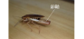

2025年
問題169 ゴキブリの生態に関する次の記述のうち，最も適当なものはどれか．
（1）ゴキブリの食性は，発育段階によって変化する．
（2）ゴキブリが集合するのは，気門から分泌される集合フェロモンの作用のためである．
（3）日本に生息するゴキブリの種類の多くは，屋内で生活している．
（4）ゴキブリは食べ物に対する好みがあり，特定のものだけを食べる．
（5）ゴキブリには一定条件の潜み場所があり，日中はほとんどその場所に潜伏している．
2025年
問題169 正解（5） 頻出度AAA
ゴキブリは，昼間は一定条件（温かい，暗い，狭い，餌や水に近い）の潜み場所に潜んでいる．
日本に生息する60種あまりのゴキブリの多くは，屋外で生活している．屋内に定着しているゴキブリの種類（2025-169-1表），生態は下記のとおり．
| 種類 | 生態 |
| チャバネゴキブリ | 全世界に広く分布する都市環境の代表的屋内害虫．飲食店，病院等に多く，日本では北海道から沖縄まで，都市を中心に広く分布している．小型で成虫の体長1.5cm．全体は黄褐色で前胸背板に明瞭な2本の細長い黒斑がある．チャバネゴキブリは日本の冬季では暖房なしでは越冬できないが暖房設備のあるビルでは通年生息する．1年に2～3回世代交代を繰り返している． |
| クロゴキブリ | 成虫の体長は3～4cm．やや褐色がかった艶のある黒色で斑紋はない．本州（関東以西），四国，九州に多く，一般住宅の優占種．ビルでは厨房，湯沸場，建築物周辺や下水道，側溝等でも見られる．気温の高い夏期に雌雄が一対で飛行行動し分布を拡大する． |
| ワモンゴキブリ | 成虫の体長は3～4.5cmで大型種．熱帯性で九州以南に多かったが最近では暖房の完備したビルで各地に定着している．やや赤みを帯びた黄褐色で前胸背板に黄白色の輪(りん)紋(もん)がある． |
| トビイロゴキブリ | ワモンゴキブリに似た大型種．前胸背板にはいかり状の黄斑紋がある．日本における分布は，局地的である． |
| ヤマトゴキブリ | 屋外でも暮らす半野生種で農村地区や郊外の木造住宅で多いが，都心の下水溝や飲食店で生息が確認されている．クロゴキブリに形態は似ているが，艶が少なくやや小型で平たい感じを受ける． |
| キョウトゴキブリ | クロゴキブリに似ているが大きさはチャバネゴキブリに近い． |
1．ゴキブリの発育過程
1）ゴキブリは卵→幼生（若虫）→成虫と経過し蛹の時期がない不完全変態である．
卵は卵鞘の形で生み出される．
2）チャバネゴキブリの例
（1）卵鞘中には30～40個の卵が入っている．
（2）雌は孵化直前まで尾端に卵鞘を保持している（2025-169-1図参照）．

出典 株式会社シー・アイ・シー
https://www.cic-net.co.jp/blog/blattella-germanica%E3%81%AE%E7%94%A3%E5%8D%B5/ を基に作成
（3）21～28日で孵化．6齢を経て成虫になる．成虫になるまでの期間は温度によって異なり，25°C約60日，27℃で45日，20℃では220日と著しく長くなり，それ以下の温度では生息が困難になる．
クロゴキブリやワモンゴキブリのような大形種では，1卵鞘中の卵の数が15～25個と少ない．卵鞘は，数日で産み落とされ，成虫の唾液等でくぼみや隙間等に固定される．卵から成虫までに1年又はそれ以上を要する．
（4）チャバネゴキブリ1匹の雌は一生の間に平均5回産卵する．
（5）チャバネゴキブリは，休眠性をもたず，日本の冬季では暖房なしでは越冬できないが，暖房設備のあるビルでは通年生息する．1年に2～3回世代交代を繰り返している．
2．ゴキブリの習性
1）夜間活動性
夜間特定の時間帯に潜伏場所から出現し，摂食，摂水行動を起こす．体内に組み込まれた体内時計により，約24時間を周期とする行動が見られる．
昼間は一定条件（温かい，暗い，狭い，餌や水に近い）の潜み場所に潜んでいる．
2）集合フェロモンを糞中に分泌しこれによって群れる．
3）雑食性で，食品類，汚物など様々なものを餌とする．
ゴキブリ類は，幼虫と成虫の活動場所は同じで，その食性も発育段階によって変化しない．
4）物の縁や隅を通る傾向があり，壁から5cm程度の隅に活動が集中する．
5）潜伏場所の近辺にはローチスポット（ゴキブリの排せつ物による汚れ）が多く見られる．
ゴキブリの防除については2024年問題168解説参照．